Phoenix Pham
Biography
I'm an incoming part-time Computer Science Master's student at Georgia Institute of Technology specializing in Machine Learning / Deep Learning, recently completing my Bachelor's degree in Computer Science and Applied Mathematics at University of California, Berkeley. I consider myself an avid learner, passionate about understanding new things and constantly challenging myself, hoping to expand my perspective on the world. My core interest lie in applying machine learning, data science, and computational modeling to push forward innovation in neuroscience, medicine, and healthcare. Some other hobbies outside of problem-solving are basketball, music, art, fashion, and culinary art.
Experience
AI Engineer @ AbInitio Bio (YC P26) (May 2026 -)
Machine Learning Researcher @ Lawrence Berkeley National Laboratory (August 2025 -)
Data Science Intern @ IDX Exchange (May - August 2025)
Software Backend Engineer @ StylistGem (May - August 2025)
Machine Learning Engineer Intern @ Mentia (January - May 2024)
Education
Georgia Institute of Technology. Computer Science, M.S. (Machine Learning) (August 2026 -)
University of California, Berkeley. Computer Science, B.A. & Applied Mathematics, B.A. (August 2022 - May 2026)
Projects
These are some of the various projects I've worked on as of late.
Predictive Information Coding
Working on extending the work of Compressed Predictive Information Coding (CPIC) from Bouchard Lab, an information-theoretical framework for unsupervised learning in time-series neural data. Implementing and testing different encoders (sparse, convolutional, etc.) for representation learning of neural signals. Collaborating with previous authors.
CS 180: Intro to Computer Vision and Computational Photography
A series of projects for my computer vision course at UC Berkeley. Here are some of them:
Neural Radiance Fields (NeRFs) From Scratch
Diffusion and Flow-Matching Models
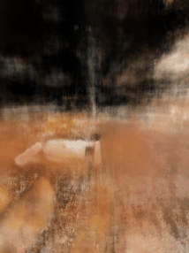

An oil painting of LeBron James
An oil painting of a goat
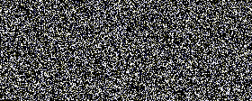
Applying DCA to Movie Scenes
Small demo project working with Dr. Kristofer Bouchard on applying the linear dimensionality reduction method Dynamical Components Analysis (DCA) to scenes of a movie. Inspired by ongoing work in the Dr. Bouchard's Neural Systems and Machine Learning Lab (NSML) at the Lawrence Berkeley National Laboratory, which developed Dynamical Components Analysis (DCA) as a method to find population-level dynamical structure in neuroscience data. The repo with my analysis can be found here.
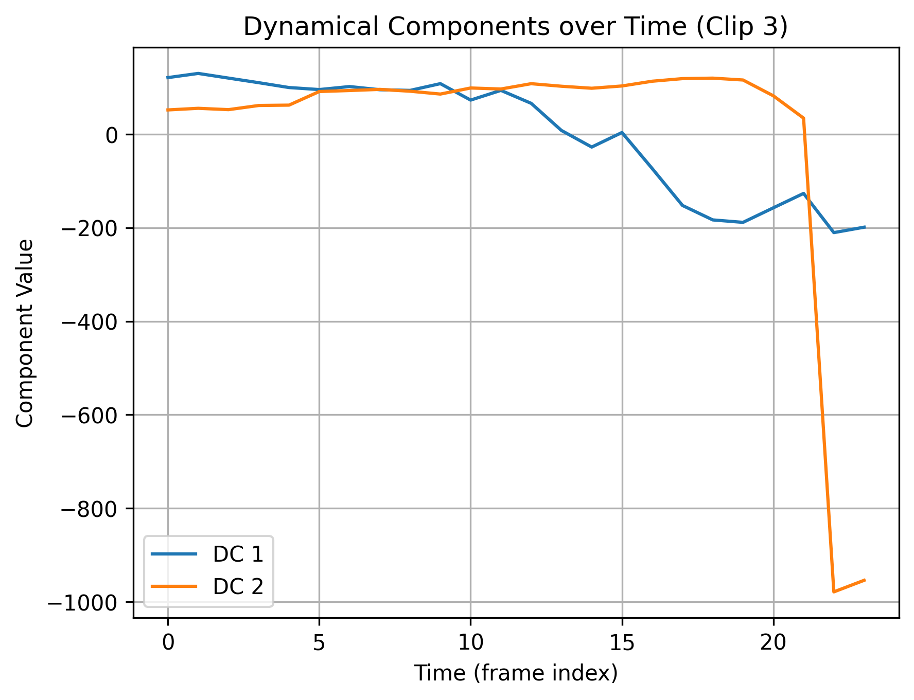
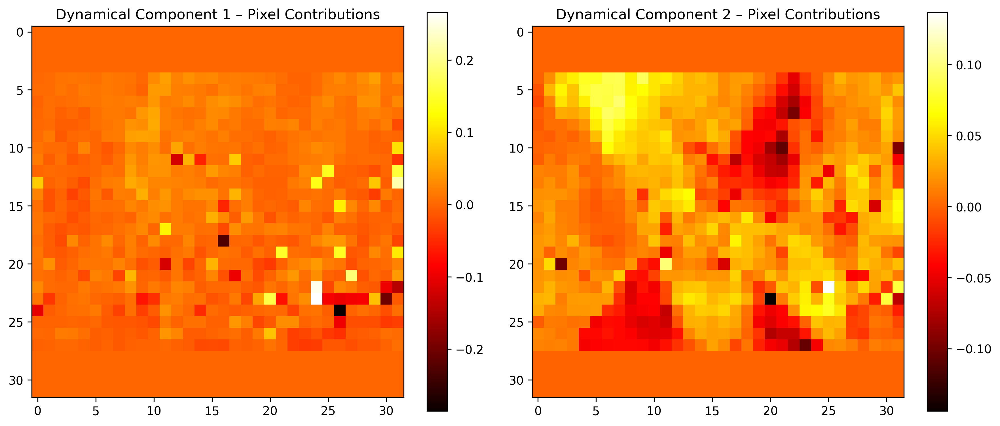
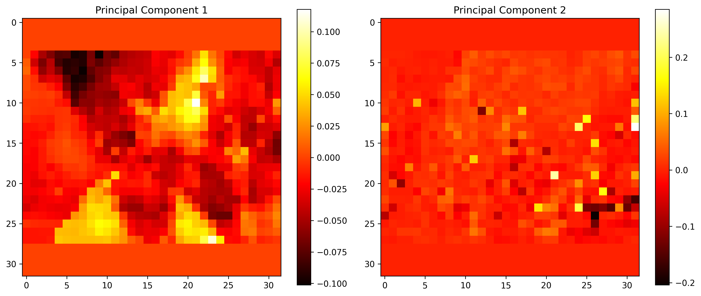
Predict California MLS Residential Property Closing Prices
For my internship at IDX Exchange. Developed an ML system to predict residential property closing prices using California MLS data, including data cleaning, feature engineering, and training regression models (e.g. OLS, Ridge, Lasso, Random Forest, Gradient Boosting, Extreme Gradient Boosting). I deployed the best performing model (XGBoost) online via Streamlit, which you can check out here!
Convolutional Neural Network from Scratch
Using solely NumPy functions, I implemented the core components of a convnet, including convolutional, linear, and activation layers from scratch to classify the Iris dataset.
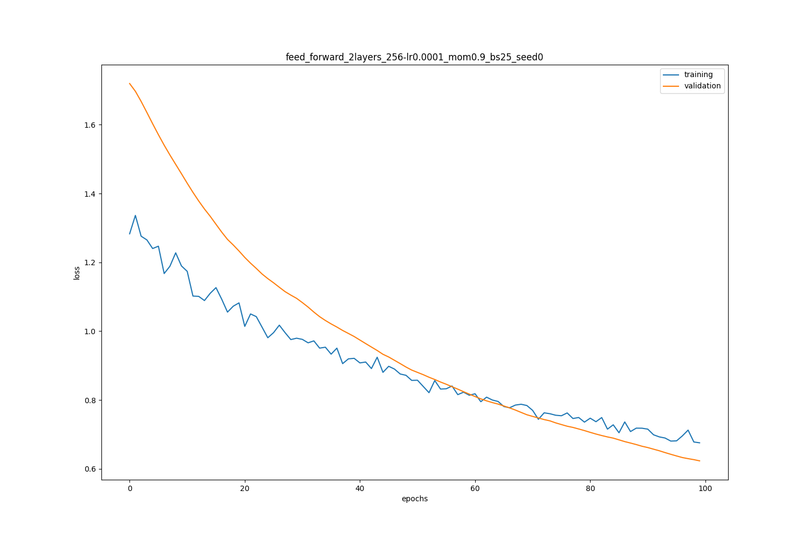
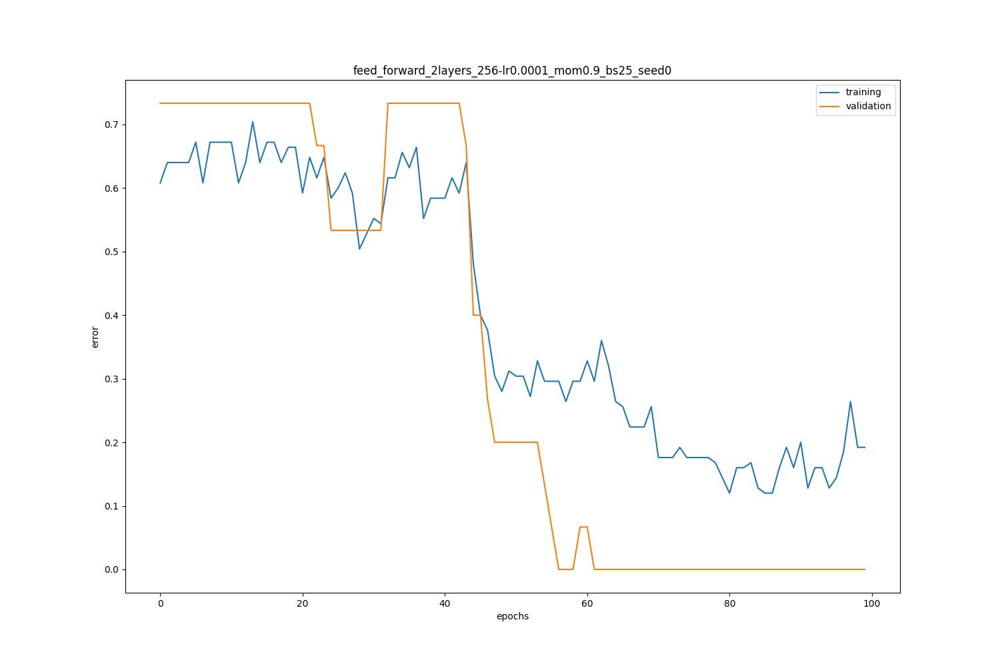
Spam/Ham Classification
Built, trained, and evaluated a logistic regression classifier to distinguish spam emails from ham (non-spam) emails. The pipeline before model training consisted of processing/cleaning email data, feature engineering text into numeric features, and exploratory data analysis (EDA) for feature selection.
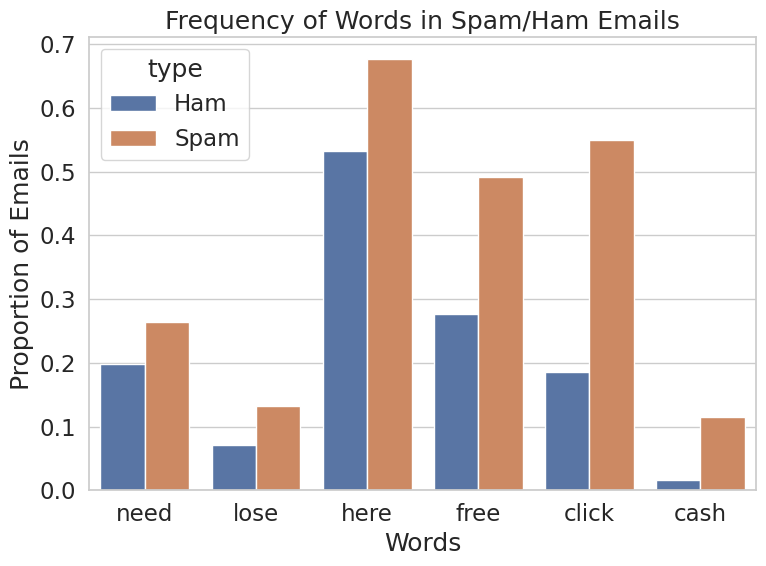

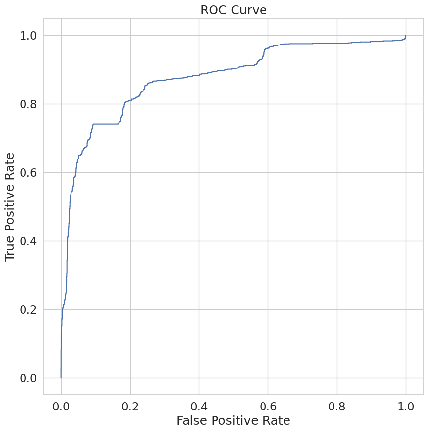
Exploring & Predicting Housing Prices in Cook County
Implemented various OLS regression models via scikit-learn to predict fair market housing prices and identify system overassessment of low-value homes. Applied data cleaning, feature engineering & selection to improve model accuracy.
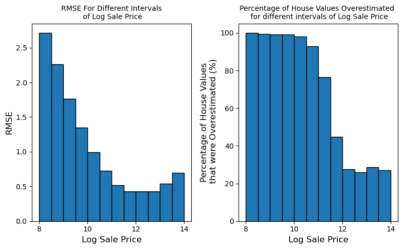
Assist People Living with Dementia through Machine Learning
Designed an ML system to "predict" early signs/symptoms of Dementia through an interactive game for people living with Dementia called DevaWorld. An ongoing project that goes through the whole ML life-cycle— from data collection, to model building, to training, and testing the model. Lead the data gathering and preparation process. Used Vertex AI, Kaggle, and Google Colab services to test various models and parse/clean raw data.
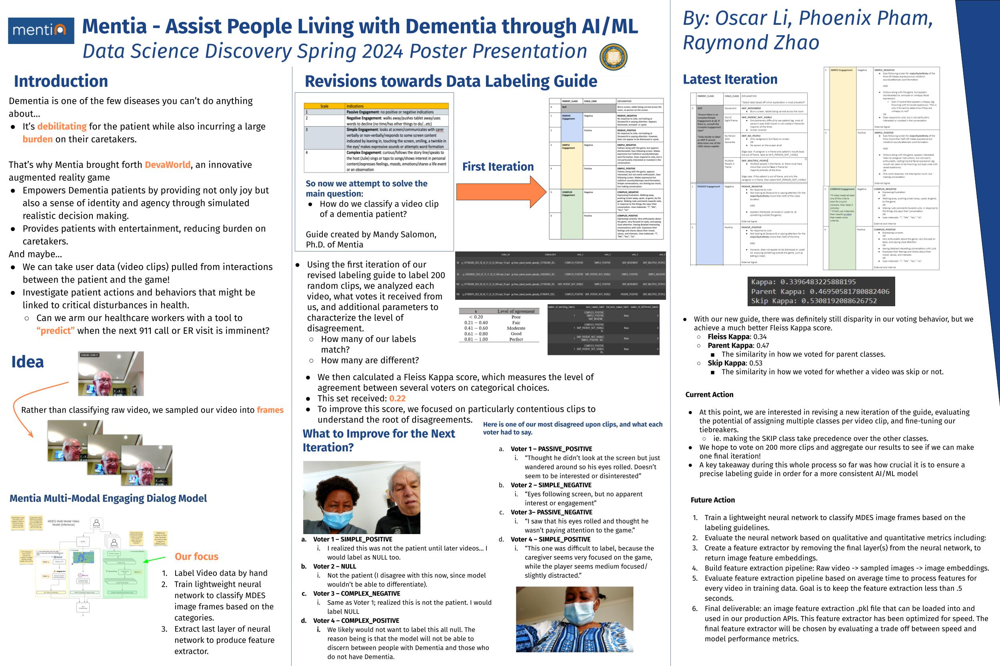
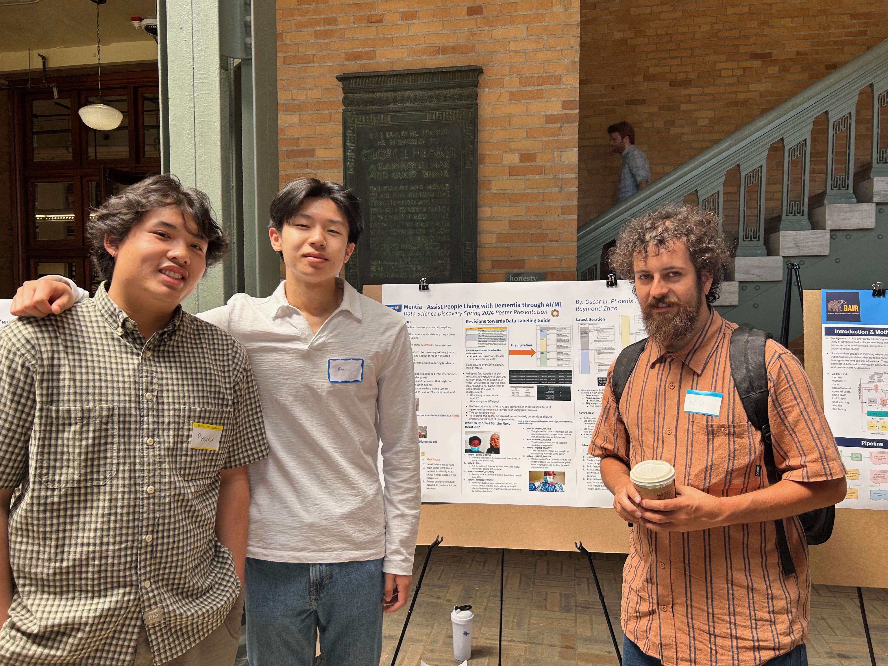
Build Your Own World (CS61B: The Game)
Implemented a custom 2D video game in Java during my Data Structures & Algorithms course. Uses A* to generate random hallways and rooms based on seed input.
JoJo Reference Finder Google Extension
A self-project Google Extension that checks for words that correlate to the Japanese manga series JoJo's Bizarre Adventure. Helped with improving my front-end skills in HTML, CSS, and JavaScript, as well as using Chrome's storage API. You can see the code and even try out the Google Extension here!
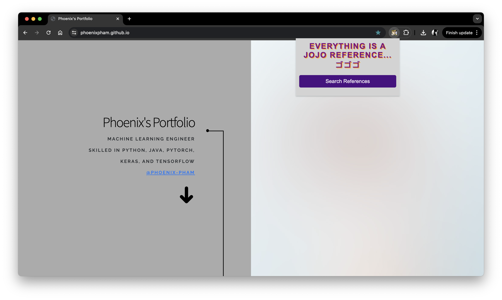
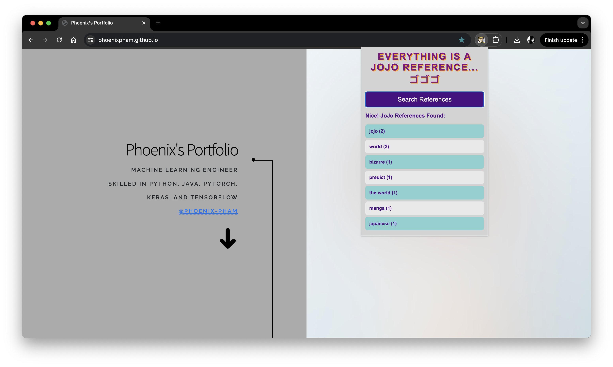
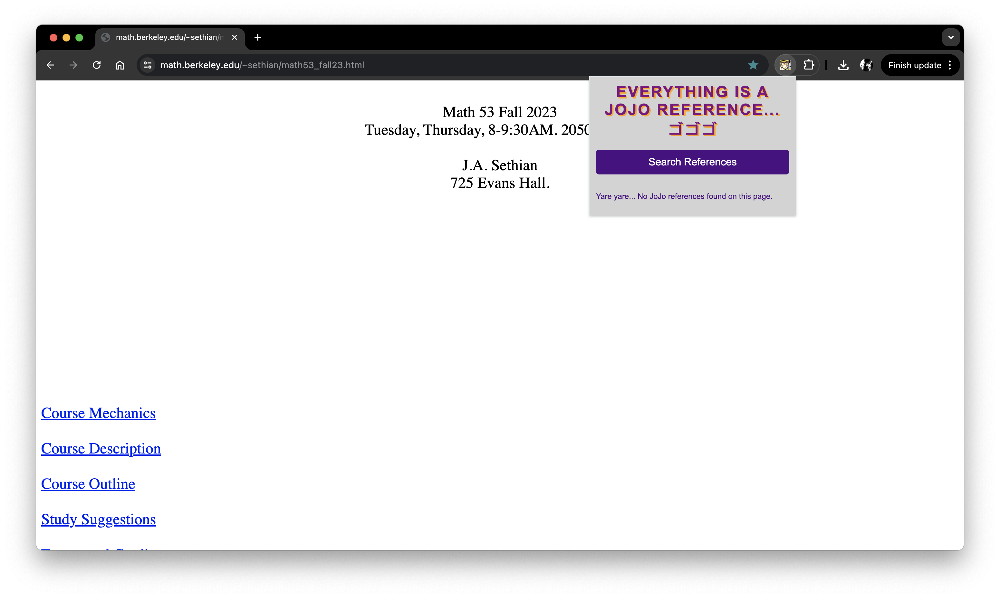
Resume
Contact Me
If you have any questions, please feel free to contact me here.